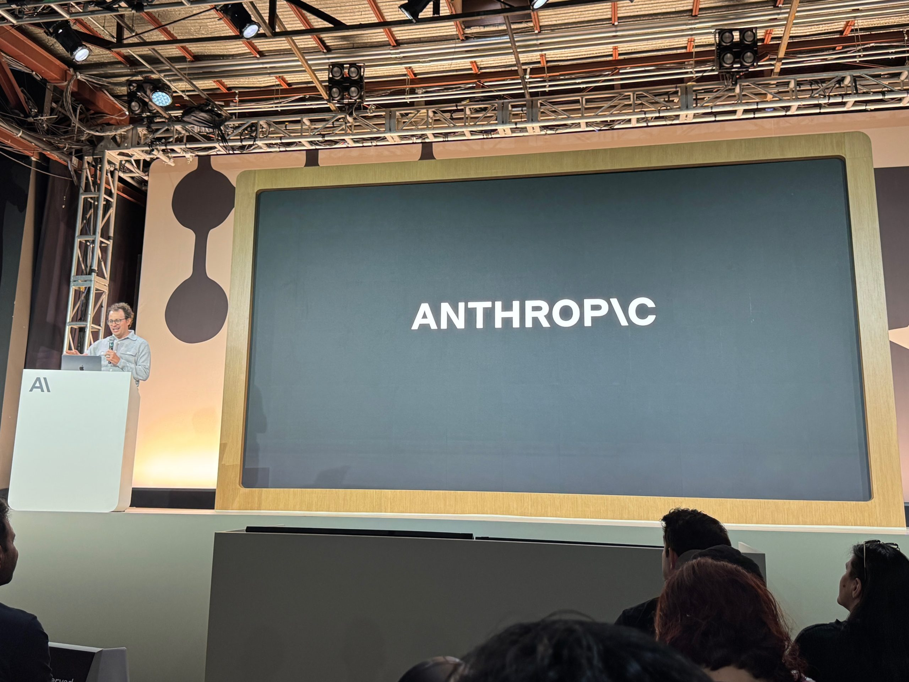

Haiku 5.5 — третий релиз Anthropic в линейке 5.5 за месяц: Opus 5.5 вышел 22 сентября, Sonnet 5.5 — 28-го. Флагманский Fable 5.5 пока задерживается: его проверка безопасности идёт дольше.
Haiku 4.5 стоила $1/$5 за миллион входных/выходных токенов. Новая цена зависит от длины запроса:
По оценке Anthropic, около 90% запросов к прошлой Haiku попадали в дешёвую категорию, а средняя экономия для разработчиков — около 75% с учётом обновлённого токенизатора.
Маленькие модели традиционно занимали суммаризацию и классификацию. Anthropic явно перекладывает Haiku 5.5 на агентную работу: живой клиентский саппорт, браузерные агенты, сжатие контекста (compaction), запросы к базам. Впервые в Haiku появились управляемые усилия (effort controls, по умолчанию medium) — разработчик сам решает, сколько модель «думает» над задачей.
Проще говоря: за цену «мелкой» модель теперь делает то, что месяц назад делали крупные. Для конвейеров с большим объёмом вызовов это самый заметный шаг за квартал.
_Материал собран по публикации The New Stack (автор Frederic Lardinois, 7 октября 2026) и сверен с заголовком VentureBeat и официальной страницей Anthropic. Отдельного пресс-релиза на сайте Anthropic на момент публикации ещё нет — использована официальная продуктовая страница._